SVG
Referat
// Alejandro Santacroce // ZGK // LF Sinner // D3DE //
Inhalt
Was ist?
Grundlagen
Wie erstellen wir ein SVG?
Einbindung
Links
Animationen
Anwendungsbereiche
Motivierende Beispiele
Tools + Plugins + Librarie
Can I use?
Fazit
Quellen
SVG
Was ist?
Die Abkürzung SVG bedeutet:S= Scalable
V= Vector
G= Graphics
kurze Geschichte:
→ erster Versuch mit SVG → 1988.
→ offizielle Empfehlung von der W3C (World Wide Web Consortium) → 2001.
SVG
Grundlagen
SVG ist eine auf XML basierende Sprache
SVG Grafiken bestehen aus ASCII-Code
SVG ist für Maschinen + Menschen lesbar
SVG Grafiken können mit nur ein Texteditor erstellt werden
SVG Grafiken sind ohne Qualitätsverlust skalierbar
SVG unterstützt Stylesprachen (z.B. CSS)
SVG unterstützt Scriptsprachen (z.B. JavaScript)
SVG ist "Flexible"
SVG ist "Small"
SVG ist "Open"
SVG ist "Standard" (offizieller Standard des W3C)
extrem geeignet für Retina Display
SVG
Wie erstellen wir ein SVG?
mit Illustrator, Inkscape, oder einfach nur mit Code!
Illustrator Beispiele
Schritt 1.1
normales Icon als Vector (Path)

Schritt 1.2
Farbe und Größe sind nicht relevant
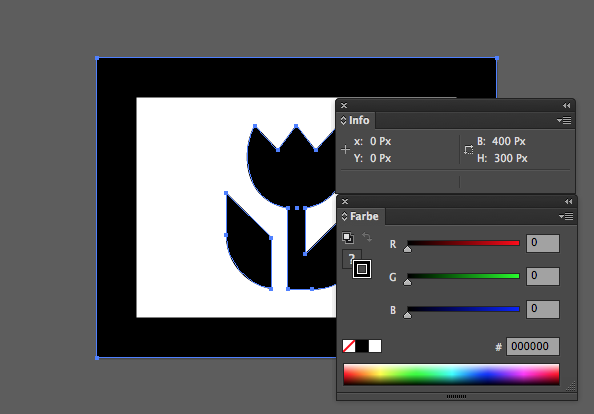Schritt 2
jedes Element kann man als separates/unabhänginges Form speichern
Schritt 3
so:
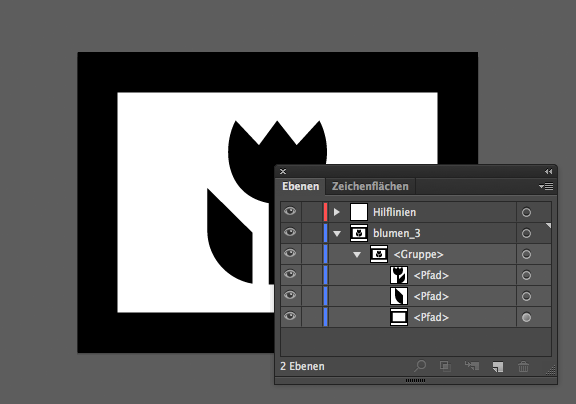Schritt 4
eine Zeichenfläche erstellen
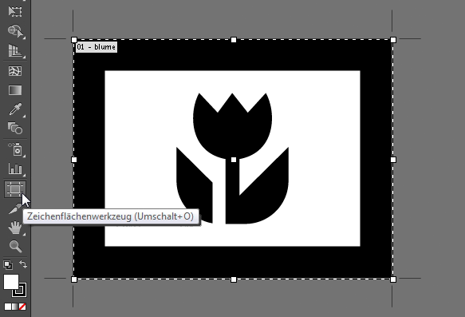Schritt 5
als SVG speichern (Zeichenflächen verwenden)
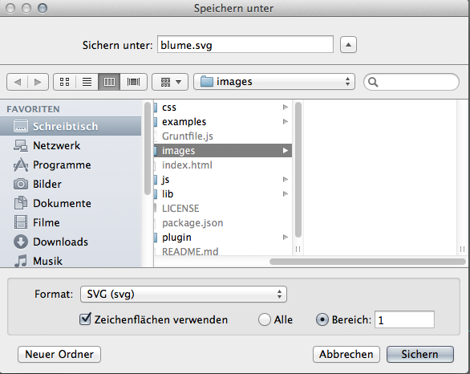Schritt 6
SVG-Optionen wählen
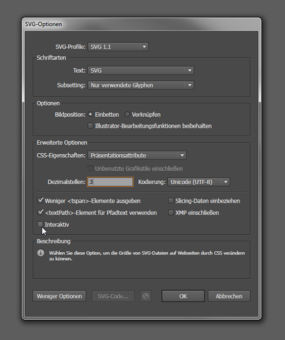Schritt 7
in unserem Ordner speichern
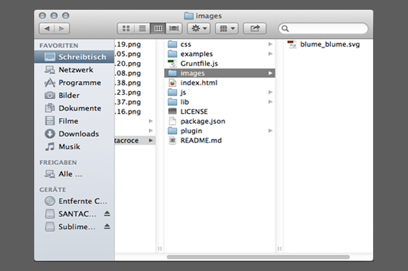Schritt 8
und voilà!
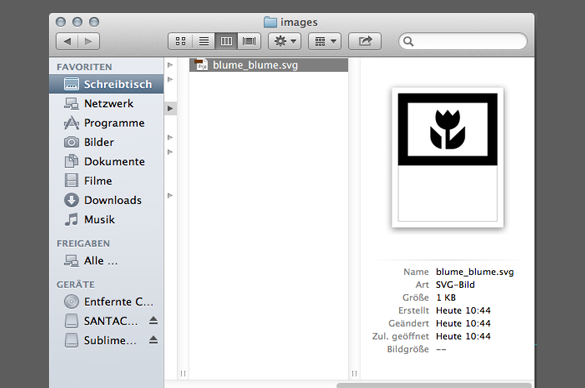SVG
mit den neuen Illustrator CC
copy + paste
vom AI zur Sublime (o.ä.)
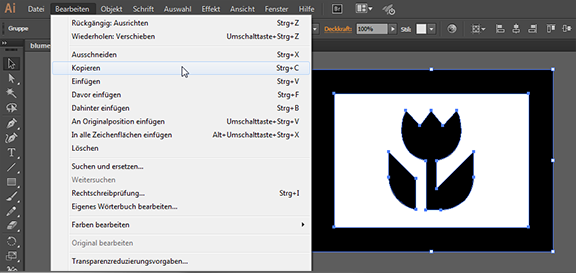 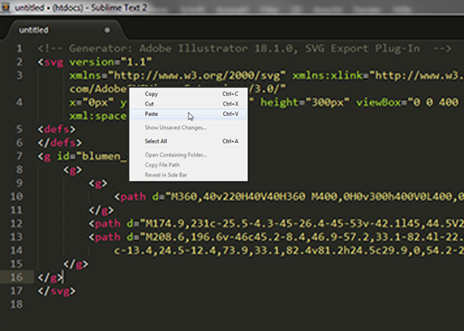PNG vs SVG = Pixel vs Pfad
Vergleich von 12x Größe
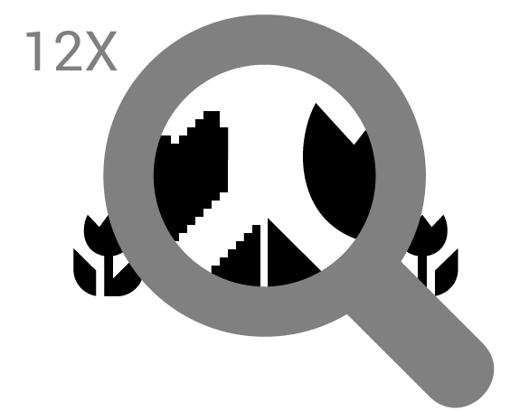Einbindung
img-Tag
background-image
HTML + CSS
#blumesvg {
width: 300px;
height: 300px;
background: url(../blume.svg);
background-size: contain;
}
Object-Tag
SVG
in HTML-Code ("inline")
SVGs können via CSS gestyled werden
auch die einzelnen Elemente innerhalb eines SVG
Filtern mit CSS Beispiel
Inline SVG
SVG circle
...
...
Filter Palette
- feBlend - filter for combining images
- feColorMatrix - filter for color transforms
- feComponentTransfer
- feComposite
- feConvolveMatrix
- feDiffuseLighting
- feDisplacementMap
- feFlood
- feGaussianBlur
- feImage
- feMerge
- feMorphology
- feOffset - filter for drop shadows
- feSpecularLighting
- feTile
- feTurbulence
- feDistantLight - filter for lighting
- fePointLight - filter for lighting
- feSpotLight - filter for lighting
feGaussianBlur
SVG
Verweis zu
Link zum nächsten Slide
Animationen
Möglichkeiten
- animate
- set
- animateMotion
- animateColor
- animateTransform
Animation mit Events
z.B. bei "click" oder "hover"
AnimateMotion
und jetzt?
Wie können wir unser SVG verwenden?
Anwendungsbereiche
Karten, Stadtpläne, Geokarten und Wetterkarten
Icons (Sprite: zusammen mit .PNG als Ersatz)
Responsive Logos/Icons
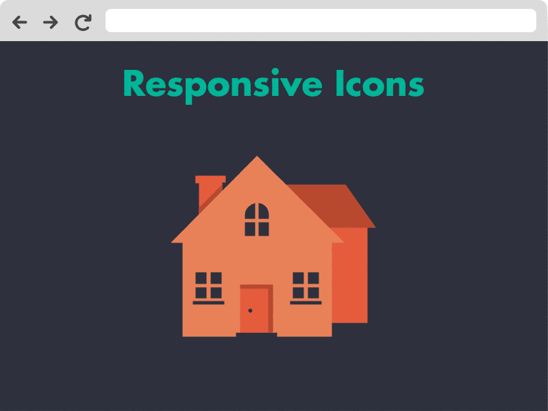
und...
Animmierte Webseiten (ohne Flash/JavaScript)
Musik Player
interaktive Infografik/Diagramme
usw.

motivierende Beispiele
WanduhrResponsive Ei
Responsive Logo
Responsive Logo 2
Xbox
Play Station
Kaffeemaschine
Animated SVG Icons
Bewegung Effekt
Blur Effekt
Spinner
Android-Darstellung
Musik
Ping Pong
Tools + Plugins
Lazy Line PainterKarte
Optimizer
Patterns Gallery
Filter
Grumpicon
SVGeneration
kostenlose Icons
Libraries
snap.svgRaphaël
Codepen
can I use
caniuse.com| IE | Firefox | Chrome | Safari | Opera | IOS Safari | Opera Mini | Android Browser | Chrome Android |
|---|---|---|---|---|---|---|---|---|
| 31 | ||||||||
| 33 | ||||||||
| 35 | 4.1 | |||||||
| 8 | 36 | 5.1 | 4.3 | |||||
| 9 | 31 | 37 | 7 | 7.1 | 4.4 | |||
| 10 | 32 | 38 | 7.1 | 8 | 4.4.4 | |||
| 11 | 33 | 39 | 8 | 26 | 8.1 | 8 | 37 | 39 |
| TP | 34 | 40 | 27 | |||||
| 35 | 41 | 28 | ||||||
| 36 | 42 |
Fazit
“SVG ist schlechthin das beste Format für UX/UI-Design.”
danke für die Aufmerksamkeit
und für die Framework → Hakim El Hattab // hakim.se // http://slides.com
FRAGEN?
Quellen
- http://sarasoueidan.com
- https://docs.google.com/presentation
- Dmitry Baranovskiy - You Don't Know SVG
- http://www.selfsvg.info/
- http://css-tricks.com/svg-sprites-use-better-icon-fonts/
- http://css-tricks.com/using-svg/
- http://www.w3schools.com/svg/default.asp
- http://www.w3.org/Graphics/SVG/
- http://svg.tutorial.aptico.de/start.php
- http://www.mediaevent.de/tutorial/svg-animate.html
- http://www.mediaevent.de/tutorial/svg-cheat-sheet.html
- http://css-tricks.com/html-for-icon-font-usage/
- http://icomoon.io/app/#/select